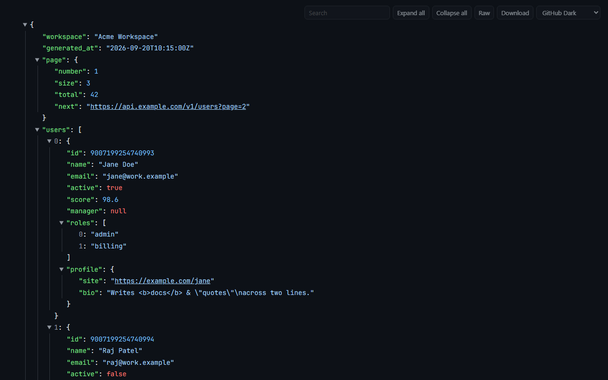
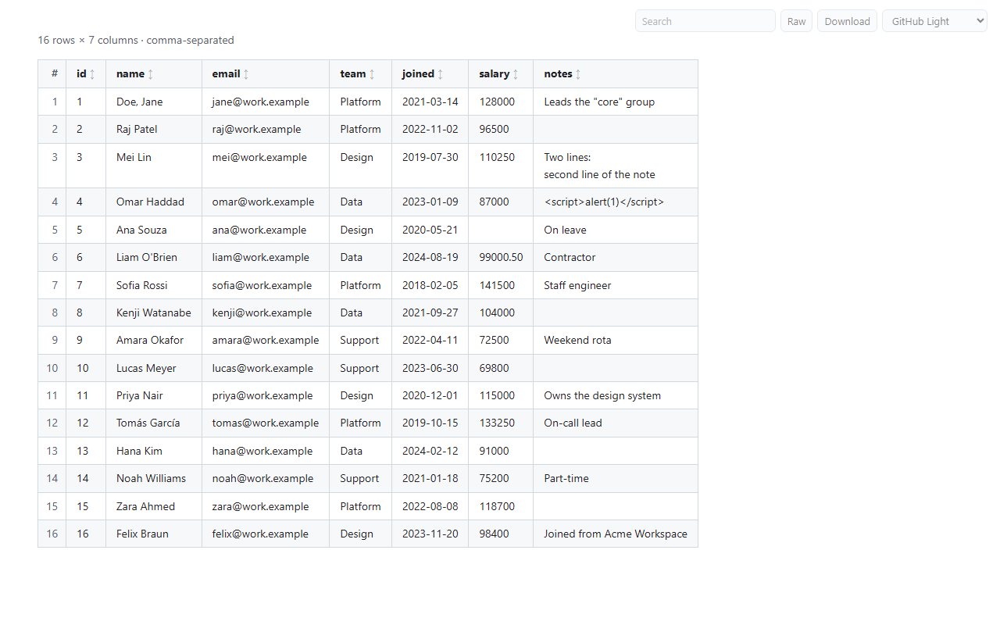
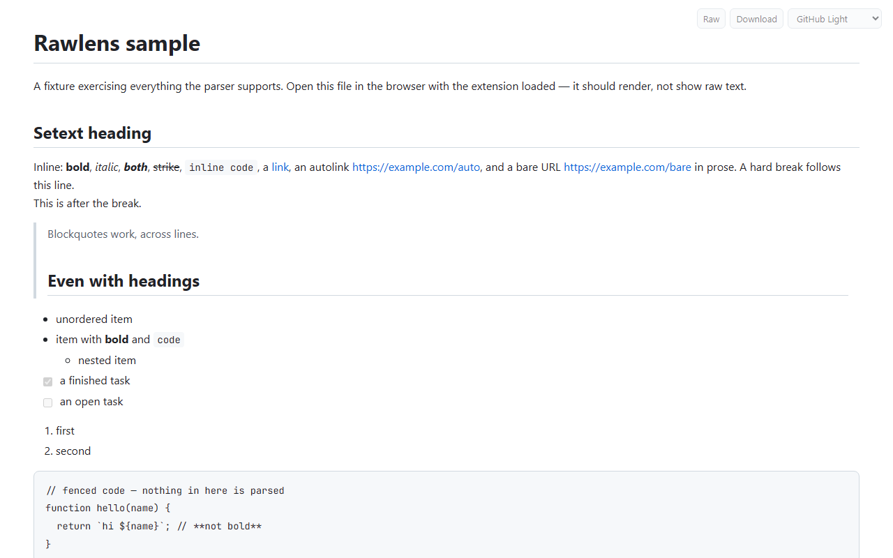
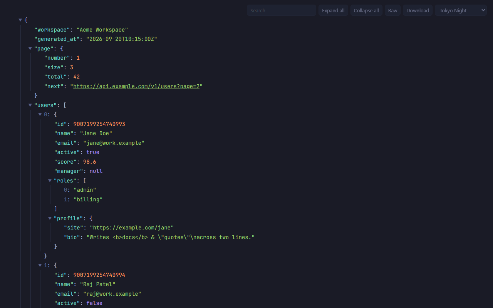
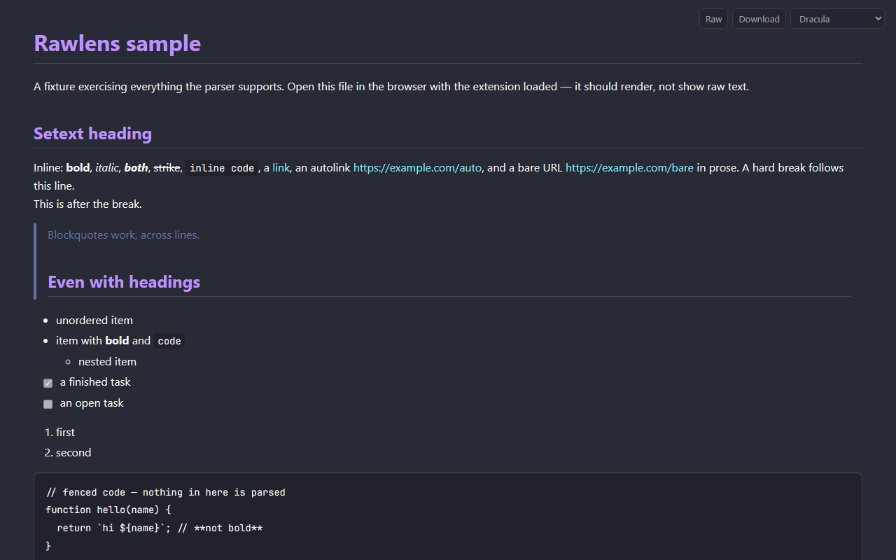

Open a Markdown file, a JSON API response, or a CSV — on the web or on your own disk — and read it as a clean document instead of raw text. Twelve themes, and not a single network request.
Browsers show these files as a wall of plain text — or, for CSV, download them without showing anything. Rawlens notices when the page you opened is really one of them and renders it, and leaves every other page alone.
Headings, emphasis, code blocks, blockquotes, nested and task lists,
tables with alignment, links, images. YAML frontmatter is shown as a
muted block, and #section links land where they should.
A collapsible tree with values coloured by type. It works on any JSON response, whatever the address looks like — open an API endpoint in a tab and read it. 64-bit ids are shown exactly as written, never rounded.
A table with a sticky header. Click a column to sort — numbers sort as numbers. Comma, semicolon, tab and pipe files all work, and CSV links open in the viewer instead of downloading.
Search inside JSON and CSV with matches highlighted. JSON search finds matches inside collapsed sections — which the browser's own find cannot — and shows each matching record in full.
One click back to the exact source, and a download that keeps the
right extension — an API response at /users saves as
users.json.
Switch from the corner of the page. Your choice is saved, synced by the browser, and applied live to every open tab.
JSON nodes are built as you open them and long tables render a page at a time, so a multi-megabyte response opens like a small one.
Works on file:// pages once you allow file access. For a
local CSV — which browsers insist on downloading — click the toolbar
icon and drop the file in.
No server, no account, no analytics, no network requests. The only thing it stores is the name of your theme. Privacy policy.
Light, dark, and everything between — the same file, restyled with one click. JSON syntax colours are tuned per theme for contrast.





Works in any Chromium browser, version 128 or newer — Chrome, Edge, Brave, Arc, Dia. A Chrome Web Store listing is on the way; until then, install from source:
chrome://extensions and switch on Developer mode (top right)..md or .json file, a JSON API address, or a .csv link — it renders.
For a CSV on your disk, click the Rawlens toolbar icon and drop the file in.